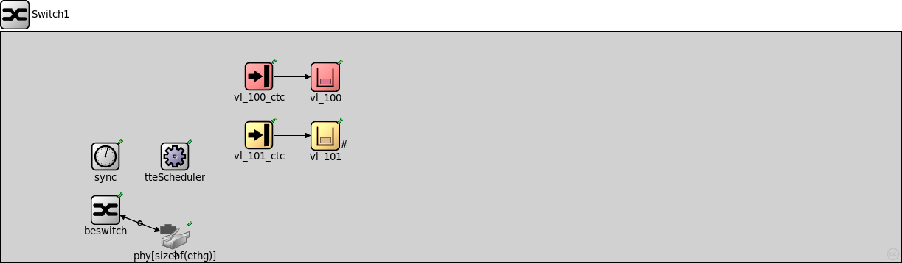
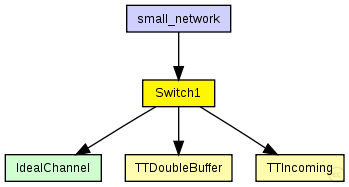
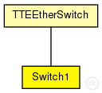

This documentation is released under the Creative Commons license
This documentation is released under the Creative Commons licenseswitch1: configuration in switch1.ini Forwards time-triggered messages with VL-ID 100 and rate-constrained messages with VL-ID 101
The following diagram shows usage relationships between types. Unresolved types are missing from the diagram. Click here to see the full picture.
The following diagram shows inheritance relationships for this type. Unresolved types are missing from the diagram. Click here to see the full picture.
| Name | Type | Description |
|---|---|---|
| TTEEtherSwitch | compound module |
Module for a TTEthernet Switch with variable number of ports. Contains a configurable best-effort implementation (beRelayUnitType like IMACRelayUnit), TTEPHYPort modules for physical ports, sync module (Sync) and a TTEScheduler module. The switch is configured by the provided TTEthernet XML network configuration (network_configuration parameter) and uses the device_name parameter to find its config. The configuration is done by the BufferManager that deletes itself at runtime. |
| Name | Type | Description |
|---|---|---|
| small_network | network |
Small sample network with three hosts and one switch that shows how to configure the TTEthernet Model. Configuration in omnetpp.ini |
| Name | Type | Default value | Description |
|---|---|---|---|
| hardware_delay | double | 8us |
| Name | Value | Description |
|---|---|---|
| display | bgb=306,263 | |
| node | ||
| labels | node |
| Name | Direction | Size | Description |
|---|---|---|---|
| ethg [ ] | inout |
Physical ports of the switch |
| Name | Type | Default value | Description |
|---|---|---|---|
| beswitch.addressTableFile | string |
set to empty string if not used |
|
| beswitch.addressTableSize | int |
max size of address table |
|
| beswitch.agingTime | double |
max idle time for address table entries (when it expires, entry is removed from the table) |
|
| phy.tteOutput.tt_buffers | string | "" |
Comma seperated list of TTBuffers that send messages to this port |
| phy.tteInput.ct_marker | int | 0 |
Critical traffic marker of the buffer |
| phy.tteInput.ct_mask | int | 0 |
Critical traffic mask of the buffer |
| phy.tteInput.incomings | string | "" |
Comma seperated list of ctc modules the input uses |
| phy.mac.address | string | "auto" |
MAC address as hex string (12 hex digits), or "auto". "auto" values will be replaced by a generated MAC address in init stage 0. |
| phy.mac.duplexMode | bool | true |
must be set to "true", as EtherMACFullDuplex does not support half-duplex operation (parameter is present to reduce the risk of accidental misconfiguration) |
| phy.mac.txQueueLimit | int | 1000 |
maximum number of frames queued up for transmission in the internal queue (only used if queueModule==""); additional frames cause a runtime error |
| phy.mac.mtu | int | 1500B | |
| vl_100_ctc.receive_window_start | int |
Beginning of the receive window in number of ticks (-1 means no receive window) |
|
| vl_100_ctc.receive_window_end | int |
End of the receive window in number of ticks (-1 means no receive window) |
|
| vl_100_ctc.permanence_pit | int |
permanence point in time in number of ticks (-1 means no permanence point, frame is relayed immediately) |
|
| vl_100.destination_gates | string | "" |
Priority of the buffer (currently only used for rate-constrained traffic) int priority=default(-1); Critical traffic ID of the buffer int ct_id=default(0); Critical traffic marker of the buffer int ct_marker=default(0); Critical traffic mask of the buffer int ct_mask=default(0); Comma seperated list of gates where the frames of the buffer are delivered |
| vl_100.priority | int | -1 |
Priority of the buffer (currently only used for rate-constrained traffic) |
| vl_100.ct_id | int | 0 |
Critical traffic ID of the buffer |
| vl_100.ct_marker | int | 0 |
Critical traffic marker of the buffer |
| vl_100.ct_mask | int | 0 |
Critical traffic mask of the buffer |
| vl_100.sendWindowStart | int | 0tick |
Beginning of the send window in number of ticks (Changes to this parameter will get active for future scheduled frames only) |
| vl_100.sendWindowEnd | int | 0tick |
End of the send window in number of ticks |
| vl_101_ctc.bag | int | 0tick |
Bandwidth allocation gap in number of ticks (Changes to this parameter will get active for future frames only) |
| vl_101_ctc.jitter | int | 0tick |
Not used |
| vl_101.destination_gates | string | "" |
Priority of the buffer (currently only used for rate-constrained traffic) int priority=default(-1); Critical traffic ID of the buffer int ct_id=default(0); Critical traffic marker of the buffer int ct_marker=default(0); Critical traffic mask of the buffer int ct_mask=default(0); Comma seperated list of gates where the frames of the buffer are delivered |
| vl_101.priority | int | -1 |
Priority of the buffer (currently only used for rate-constrained traffic) |
| vl_101.ct_id | int | 0 |
Critical traffic ID of the buffer |
| vl_101.ct_marker | int | 0 |
Critical traffic marker of the buffer |
| vl_101.ct_mask | int | 0 |
Critical traffic mask of the buffer |
| vl_101.max_dispatch_delay | int | 0tick |
Not used |
| vl_101.bag | int | 0tick |
Bandwidth allocation gap in number of ticks (Changes to this parameter will get active for future frames only) |
| vl_101.jitter | int | 0tick |
Not used |
| vl_101.size | int | -1 |
Size of the buffer negative means infinite |
| vl_101.drop_new | bool | false |
Dropping policy, Should the newest frame instead of the oldest frame be dropped when the buffer is full (see size parameter) |
// // switch1: configuration in switch1.ini // Forwards time-triggered messages with VL-ID 100 and rate-constrained messages with VL-ID 101 // module Switch1 extends TTEEtherSwitch { @display("bgb=306,263"); submodules: vl_100_ctc: TTIncoming { parameters: @display("p=170,130"); } vl_100: TTDoubleBuffer { parameters: @display("p=240,130"); } vl_101_ctc: RCIncoming { parameters: @display("p=170,200"); } vl_101: RCQueueBuffer { parameters: @display("p=240,200"); } connections: vl_100_ctc.out --> vl_100.in; vl_101_ctc.out --> vl_101.in; }
This documentation is released under the Creative Commons license